| # | 问题 | 状态 | 说明 |
|---|---|---|---|
| 1 | 标题菜单日语贴底 | ✅ 已修 | FusionPixelJA 与 PressStart 的 middle 基线不一致，日语字上提 3px 对齐光学中心（s1） |
| 2+4 | 选人立绘占比不成组 | 🔲 待拍板 G | 确认是源图构图差异（剣二窄幅留白 vs 隼人宽帽满幅），裁切调不平 → 按你指示重新生成：两人画进同一张图，强制同 zoom / 同头位 / 同眼线。4 张候选见下方，选一张我拆分归一后一次性换掉 选人 / VS / 结算 / HUD 四处头像 |
| 3 | HUD 头像太大没留白 | ✅ 已修 | 重切：脸占框 ~57%、头顶留白，斗笠帽檐 / 鬼角完整入框（s3）；顺手修了右侧名字撞血条端头卷纹的碰撞 |
| 5 | 选人屏白色日语小字 | ✅ 已删 | 称号行移除，只留「HAYATO · 隼人」名牌 + TYPE + POW/SPD（s2） |
| 6 | 横带要装饰性 + 文字居中 | ✅ 已修并设为默认 | 漆底 + 双金线 + 朱线，家纹章紧贴文字两侧 + 三粒金菱渐隐拖尾，文字基线重算至带正中（s4/s5） |
| + | 自查顺手修 | ✅ | 结算屏台词框改为随文字自适应宽度（长台词此前溢出边框）；MAX COMBO 单数改 1 HIT |
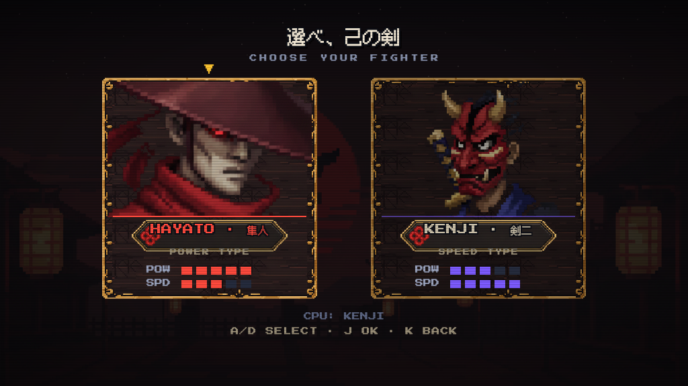
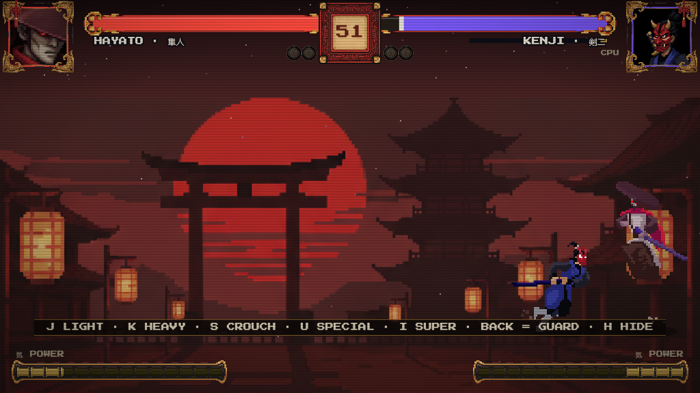
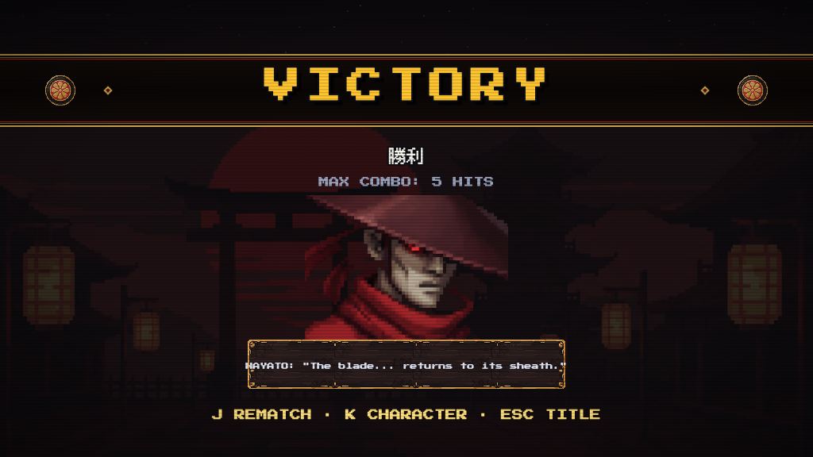
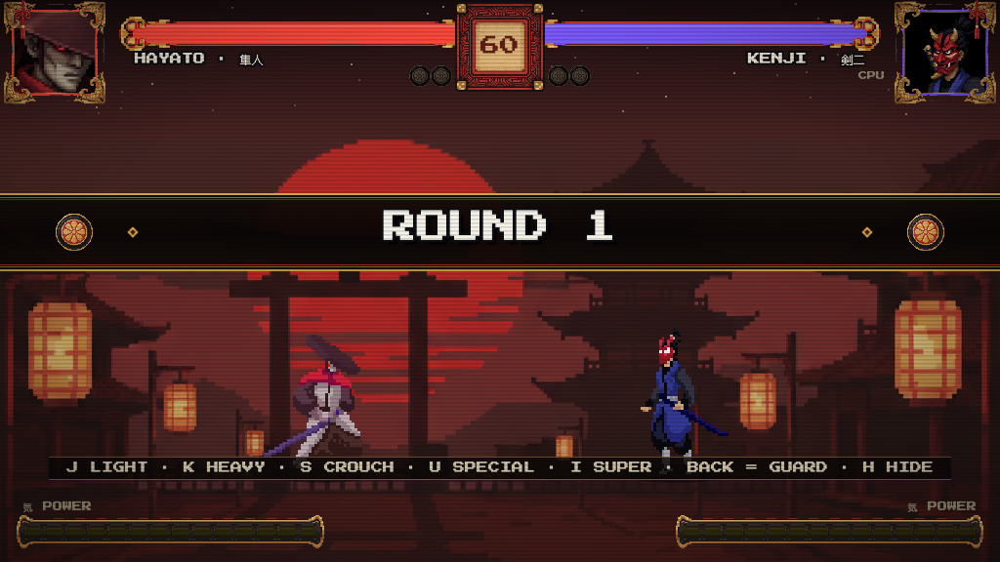
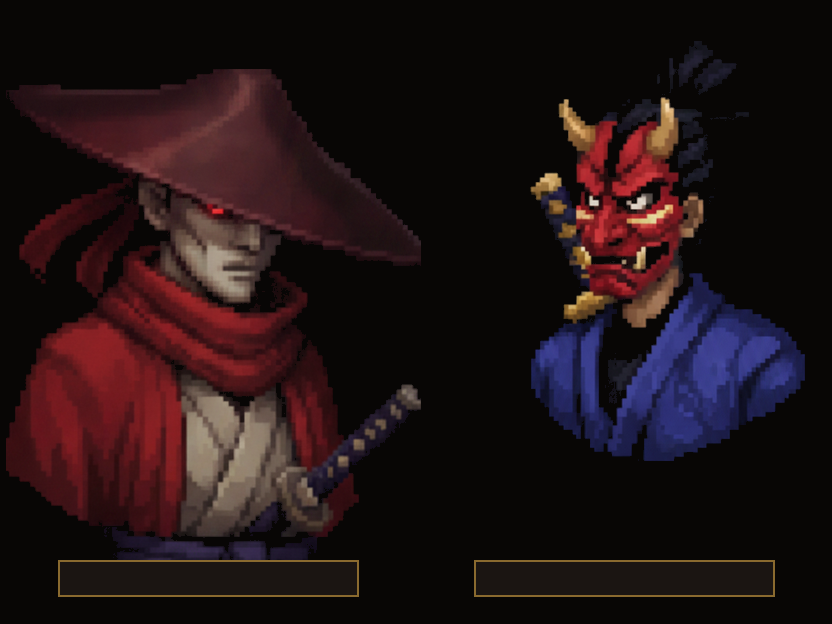
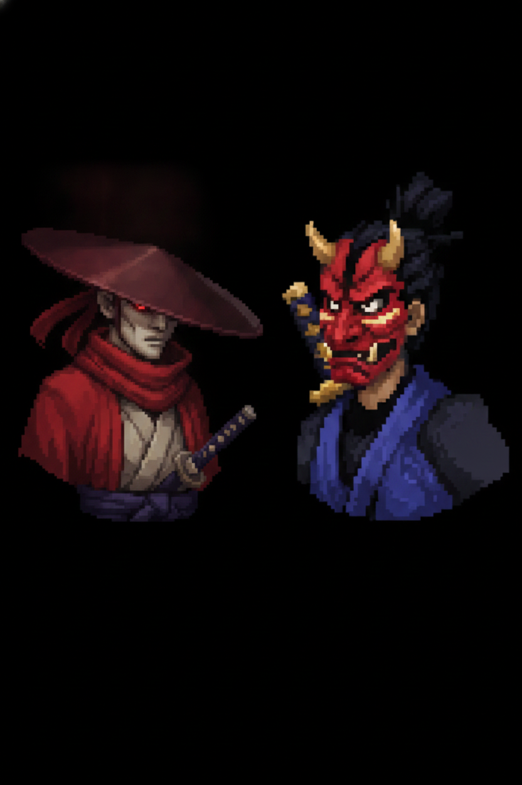
| # | 问题 | 状态 | 说明 |
|---|---|---|---|
| 1 | 双语规范（EN 为主 + JP 点缀） | ✅ 已实装 | 全局落地：屏幕大标题 = JP 汉字为主 + EN 小字（選べ、己の剣 / 心得 / 一時停止）；人物名 = EN·JP 并排；属性 POW/SPD、操作条、菜单说明全英文 |
| 2 | 标题菜单：居中 / VS CPU 太傻 / 副标题 / 署名 / 站桩小人 | ✅ 已实装 | 菜单改 BATTLE 決闘 / TRAINING 修行 / HOW TO PLAY 心得，EN+JP 光学居中、baseline-middle 垂直居中；副标题已删；LuizMelo 素材为 CC0、署名非必需（已核实 itch.io 页），署名行已删；两个站桩小人已移除，换成飘浮余烬粒子（他们在城门背景上没有地面线，看着像贴上去的） |
| 3 | 选人头像大小不一致 / 名字错位 | ✅ 已实装 | 两张立绘按视觉脸高重新归一（三轮校准），眼线同高；名字改为「HAYATO · 隼人」单行居中于名牌，副行只留称号 |
| 4 | 暂停界面双语混乱 | ✅ 已实装 | 统一为全局模式：一時停止（大）+ PAUSED（小）竖排，选项改键帽图示 |
| 5 | HUD 血条撞人像框 / 用精致画像 | ✅ 已实装 | 血条起点让出人像框金角（136/888）；头像改用立绘的方形脸部切片（白面浪人 / 赤鬼面清晰可辨） |
| 6 | 大墨痕丑 / 连击位置 | 🔲 待拍板 | 做了 4 种公告风格实机对比（见下节）；连击计数按业界惯例（SF/KOF：出招方一侧固定位，不跟随角色）锚定到血条正下方 y=108，缩小并加泼墨底 |
| 7 | 结算屏：台词英语化 / 构图 | ✅ 已实装 | 台词换日式英语：HAYATO: "The blade... returns to its sheath." / KENJI: "...Too slow."（UI 层翻译表，不动 data.js）；构图随公告风格一起看下节对比 |
| 8 | 防御蓝矩形太糙 | ⚠ 需授权 | 确认画在 fighter.js 尾部（硬边界文件）。设计已备好：半月弧形气浪（三层弧线：外晕/主弧/内亮边，格挡瞬间弹出扩散涟漪），朝向对手开口。需要动 fighter.js 尾部约 15 行纯视觉代码，与主线冲突风险低——你说「准」我就动 |
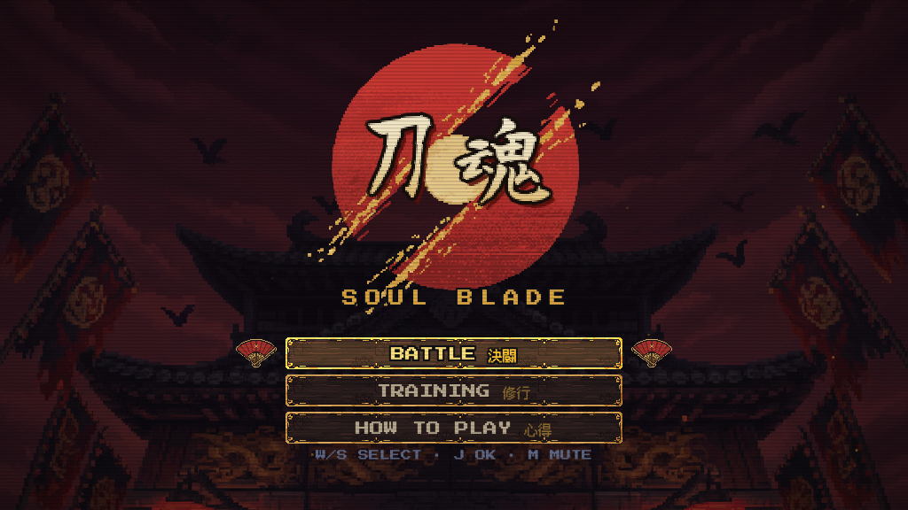
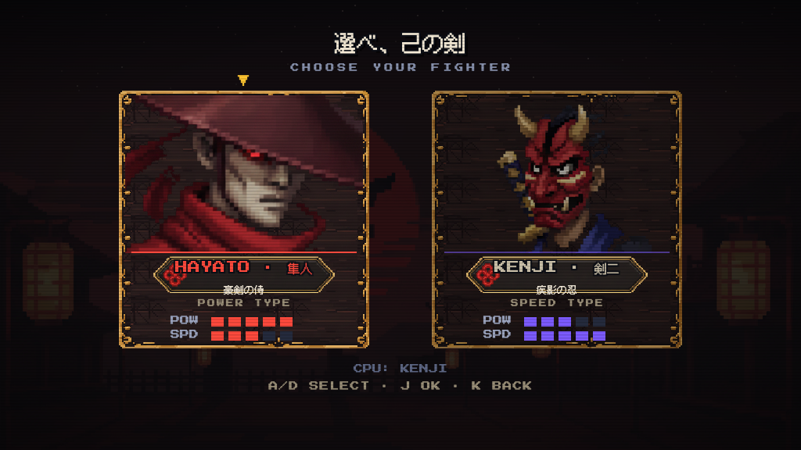
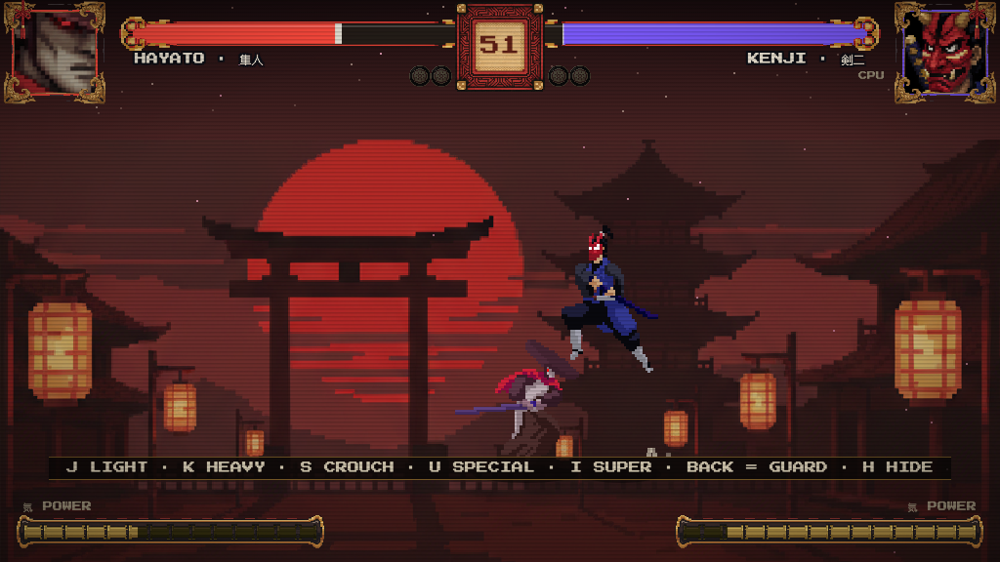
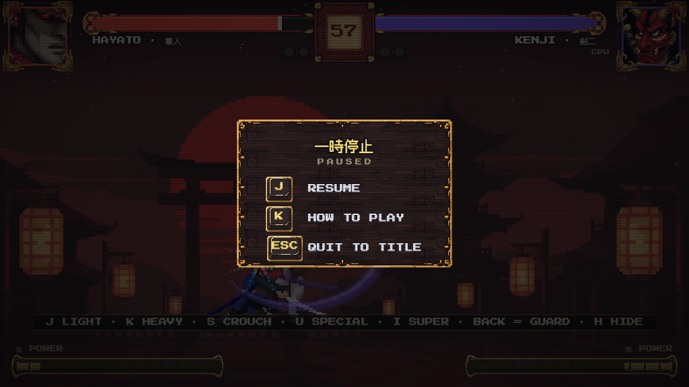
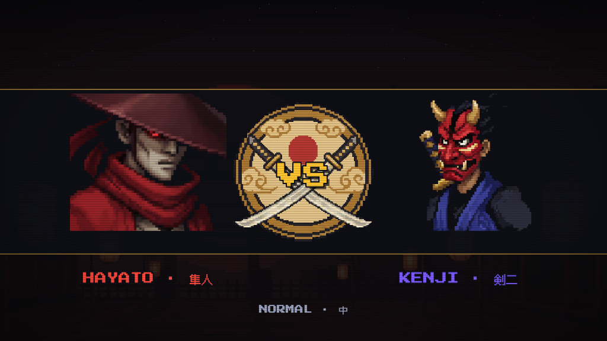
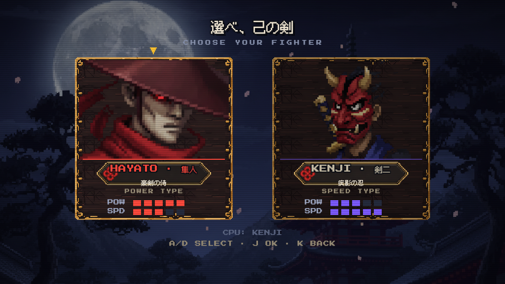
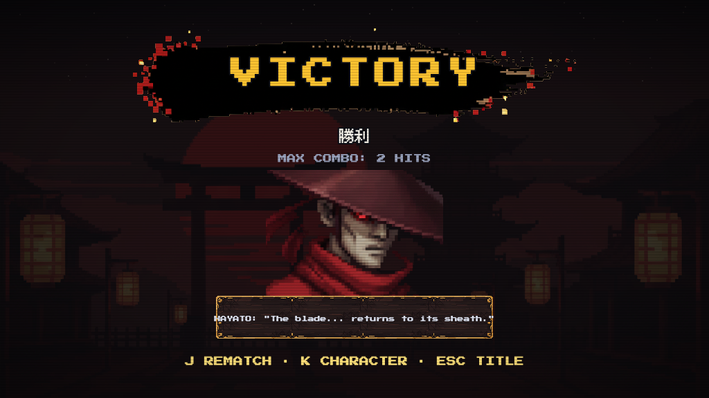
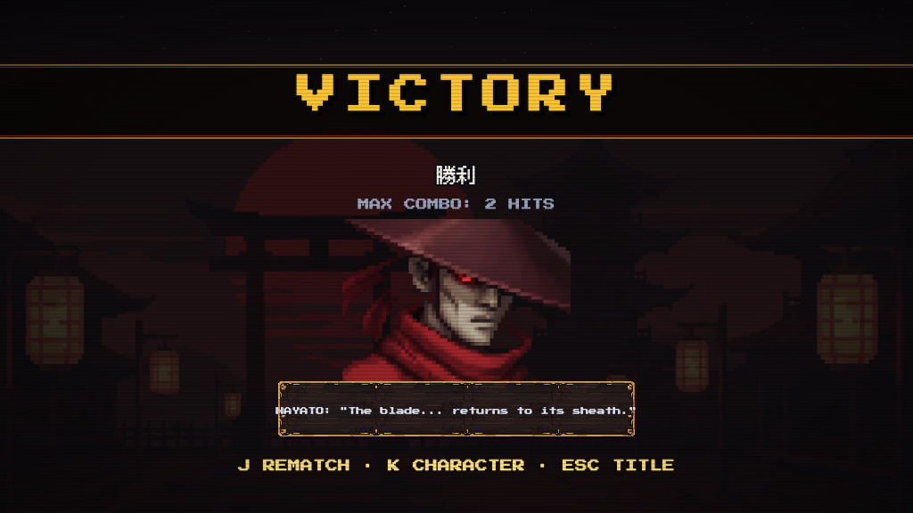
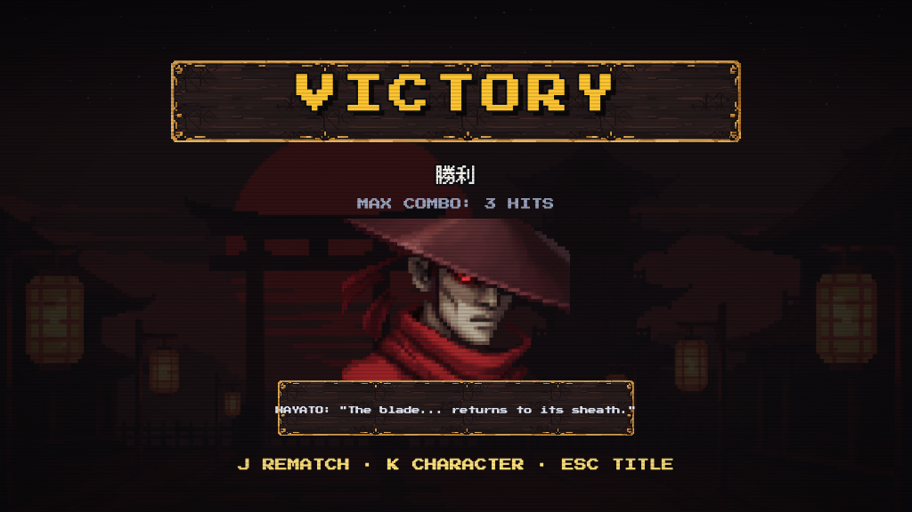
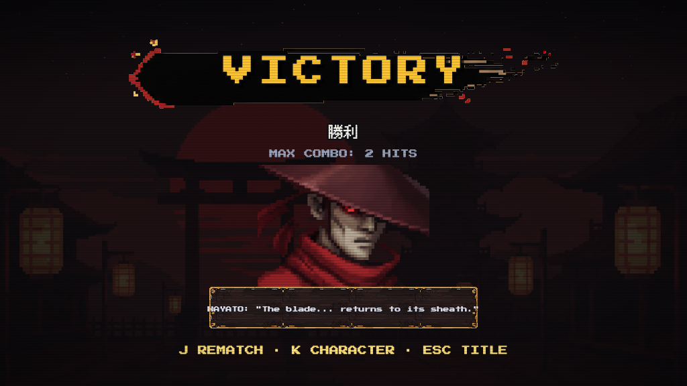
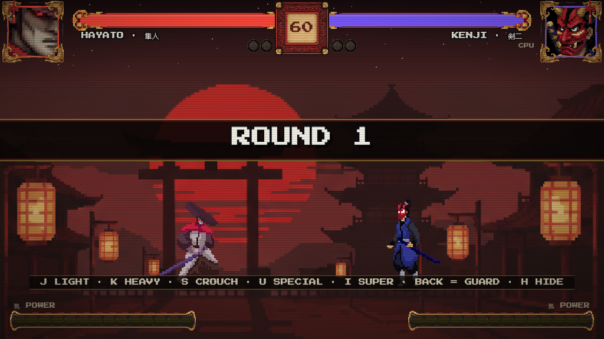
&ann=band / &ann=plaque / &ann=ink2（默认 ink）。| 倒计时最后 10 秒 | 屏幕四边红晕脉冲——紧张感反馈，此前只有数字变色 |
| 选人 hover | 立绘微放大 1.04 + 高亮——此前只有亮度差，反馈太弱 |
| 连击计数 | 调查结论：SF/KOF 均为「出招方一侧固定位」；已锚定到血条正下，缩小字号加泼墨底 |
| HOW TO PLAY 标题 | 改「心得」大字 + EN 小字，与全局双语模式统一 |
| # | 项 | 现状 / 提升方案 |
|---|---|---|
| B1 | 屏幕切换硬切 | 所有屏是瞬间跳转，很廉价。方案：20tick 墨色淡入过渡（ui.js 检测 G.screen 变化叠加渐隐黑幕），零主线依赖。强烈推荐 |
| B2 | 难度选择光标 | 三块小木牌选中态只有亮度差；补折扇光标与标题菜单一致 |
| B3 | 标题 logo 静态 | 只有上下浮动；可加斩痕金粒偶发闪烁（余烬已加，这是锦上添花） |
| B4 | 结算屏战报单薄 | 只有 MAX COMBO 一行；引擎 G.stats 目前只记这一项，扩展需动 main.js（主线协调，挂账） |
| B5 | VS 过场静态 | 已换大立绘；可再加中央斜切分割线 + 速度线拉出对峙张力（纯 ui.js） |
| KO 慢镜/镜头微震 | main.js 回合状态机，本分支不动 |
| 防御音效 / 菜单音效细分 | audio.js 禁区 |
| 战报数据扩展 | 见 B4 |
| 项 | 问题 | 选项 | 我的推荐 |
|---|---|---|---|
| A | 公告风格 | A1 墨痕 / A2 漆金横带 / A3 木牌 / A4 细墨痕 | A2 |
| B | 防御冲击波（动 fighter.js 15 行） | 准 / 不准 | 准 |
| C | 选人屏月夜背景 | 用 / 维持暗化黄昏 | 用（与战斗黄昏形成节奏差） |
| D | 屏幕过渡淡入（B1） | 做 / 不做 | 做 |
| E | B2/B3/B5 小提升 | 全做 / 挑着做 / 不做 | 全做（都是纯 ui.js 小改） |
| F | BATTLE·決闘 命名 | OK / 换（备选：出陣 / 対戦） | OK |